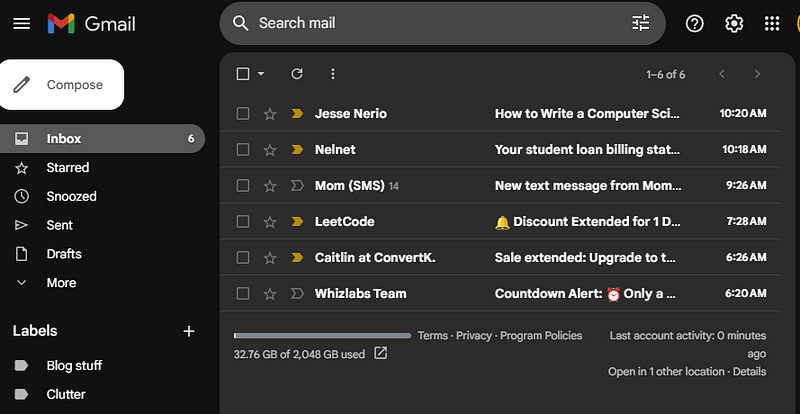
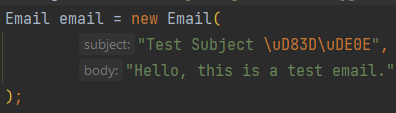

Sending emails through code is ultra cool.
You can use this SMTP code in all applications you create, including APIs, GUI, websites and mobile apps.
I will only be using Large Language Model, like Chat-GPT, friendly libraries.
So you can copy and paste all the code here and ask your LLM to write it for you.
After reading this article you will be able to understand the underlying concepts of sending emails.
My goal here for you is to understand how to send SMTP emails in any language.
What is SMTP?
Simple Mail Transfer Protocol is about sending mail.

Email storage, sending & receiving each use a different protocol.
Here they are...
- Sending emails: SMTP
- Receiving emails: POP3, IMAP
- Storing emails: Provider, like Gmail or Outlook, owned databases
In the backend of a email client like Gmail, take a look:
The website programmatically uses SMTP for sending emails and either POP3 or IMAP for receiving emails.
You can completely rewrite the Gmail client or any provider like Outlook or Hotmail like in the above picture using pure code and SMTP & POP3 protocols.
You just need to wrap a user interface either using a website or desktop framework around SMTP & POP3 code.
The majority of email providers give you full access to SMTP & POP3 under certain conditions.
Some providers do make you pay for using email in code though.
I believe Gmail, Outlook and Proton are all free but have some steps you have to take for security purposes.
What is cool, SMTP & POP3 are completely universal.
So all email providers from Yahoo to AOL use these protocols.
So it all looks the same in code!
These examples I list here just need the SMTP credentials copied and pasted from the different providers.
Just note, some providers require you to allow developer access to the email account.
I will assume you can look that up for your provider on your own.
But for now, let's get into SMTP.
How does SMTP work?
Your email provider is publicly hosting a server which only accepts a specific socket connection.
If you want to read more about how sockets and packets work you can read my sockets guide.
SMTP is a TCP protocol.
That means it is written through code in a specific way.
In pseudo code it would look something like this:
@Override
public Packet encodeAndSendData(OutputStream stream) {
Data data = new Data();
Packet p = new Packet(data);
p.subject = stream.readByte();
p.body = stream.readTriByte();
sendPacketToServer(p);
return p;
}
The packet would be organized to send bytes over a network with a specific size, format and order.
All TCP packets have to be implemented using byte streams in this way.
SMTP, POP3, IMAP, HTTP, SSH and many more use TCP packet implementations like the above.
They are just packet code implementations with a fancy name slapped on it.
When you use SMTP programmatically, you are actually using an abstraction of these packets.
Beneath the abstraction, the actual SMTP implementation, among the other TCP packet protocols, are kept standard and the same across all email providers.
The standards are kept by the IETF, Internet Engineering Task Force.
The whole reason we can use SMTP in any language for any provider is because of the IETF standards.
For security purposes the SMTP protocol actually includes like 7 packet implementations like the above and all have to be sent in order.
We won't go into the 7 packet implementation SMTP uses but at least you know its all just a few TCP packets and not a big deal.
What credentials do you need for SMTP?
For all SMTP connections you need these things:
- SMTP Email Provider Server URL
- Provider port
- Your email for the provider
- Your email password
You programmatically insert them into the code, like these:
The simplest code example
This is fundamentally how all SMTP code works.
Perhaps the easiest way to see how to send SMTP code is through Python without encryption.
Though with these examples anybody with Wireshark or a packet sniffer can read your emails, this is a simple way to understand the basics of sending emails.
We can add encryption later.
Take a look at this code...
import smtplib
server = smtplib.SMTP("smtp.gmail.com", 25)
# Login to your Gmail account
server.login("your@gmail.com", "your_password")
# Compose the email
subject = "Subject of the email"
body = "This is the body of the email."
# Combine subject and body into the message
message = f"Subject: {subject}\n\n{body}"
# Send the email
server.sendmail("your@gmail.com", "recipient@example.com", message)
print("Email sent successfully!")
We connect to a Gmail SMTP server using our email and password, just like we would in an email client.
You are using the same type of code in the backend of a web app like Gmail.
We then add a subject and body into a message and send it to a recipient email.
How to include formatting in emails
On the SMTP server side there is a subject and email body reader AKA parser which will automatically recreate the email to be sent.
Technically you can send plain text emails and with the right order of characters and strings you can add HTML, structure and attach files to the email.
It is very cumbersome and you have to memorize the way plain text would be sent.
If you were to do this the plain text way, your email text would look like this:
Subject: Example Email with Attachment
<html>
<head>
<style>
body {
background-color: #000000; /* Black background */
color: #ffffff; /* White text color */
}
</style>
</head>
<body>
<p>Hello,</p>
<p>Please find attached the PDF document.</p>
--- Begin PDF Attachment ---
JVBERi0xLjQNJeLjz9MNCjE5MDk3IDE2IDAgb2JqDTw8L0xpbmVhcml6ZWQgMS9MIDIxODUxL08gMjcvVHlwZS9QYWdlTmFtZS9TdWJ0eXBlL1R5cGUvWE9ia
[Base64-encoded PDF content goes here]
--- End PDF Attachment ---
<p>Below is a link to our website:</p>
<a href="https://example.com" style="color: #ffffff;">Visit Our Website</a>
<p>Best regards,<br>John Doe</p>
</body>
</html>
Here you would have to memorize these things...
- "Begin PDF Attachment"
- PDF or attachment encoding
- Write down every attachment type Begin and End
- Subject and email formatting
- A lot of other stuff
There is an easier way to do this is with an abstraction.
It makes formatting emails and attachments faster, easier and more consistent in all programming languages.
This abstraction is called MIME or Multipurpose Internet Mail Extension.
It seems like MIME is making things more complicated but in reality it makes sending emails simpler and faster.
You just use MIME to manipulate the plain text to be written in a way the remote server will understand.
This allows you to do it without memorizing all the keywords and placements you would have to do for emails.
Just trust me, it is really cumbersome to write emails without MIME.
Lets take a look at the same thing using MIME format:
import smtplib
from email.mime.text import MIMEText
from email.mime.multipart import MIMEMultipart
from email.mime.application import MIMEApplication
server = smtplib.SMTP("smtp.gmail.com", 25)
server.login("your@gmail.com", "your_password")
# Write the email in multiple parts: subject, body attachments
message = MIMEMultipart()
#Subject
message['Subject'] = "Example Email with Attachment"
#Body
html_content = """<html><head><style>body{background-color:#000000;color:#ffffff;}</style></head><body><p>Hello,</p><p>Pl..."""
body = MIMEText(html_content, 'html')
message.attach(body)
#Attachments
pdf_file = open('path/to/your/file.pdf', 'rb')
pdf_MIME = MIMEApplication(pdf_file.read(), _subtype="pdf")
pdf_MIME.add_header('Content-Disposition', 'attachment', filename='document.pdf')
message.attach(pdf_MIME)
# Send the email
server.sendmail("your@gmail.com", "recipient@example.com", message.as_string())
print("Email sent successfully!")
All we did was take MIME into multiple parts; the subject, the body and the attachment, then send it.
MIME automatically encodes the email like the format mentioned above, but makes it much easier for you to do so.
With some practice you will find your self pumping out great emails using MIME just as if you were in the GMail client.
Obviously it takes a little more time, but it has great potential for automation so in the end it should save more time!
Emojis
Oh this is easy you will like this.
Look up the emoji online and copy and paste it into the code.
Sometimes it shows up as an actual emoji in the code and sometimes its encoded like this:
Or this
# Using Unicode escape for the grinning face emoji emoji_unicode = "\U0001F601"
You can place this in the body or subject of the email and it will work.
Like this:
# Connect to the Gmail SMTP server
server = smtplib.SMTP("smtp.gmail.com", 25)
server.login("jessework@proton.me", "ilikepeas1")
# Write the email in multiple parts: subject, body attachments
message = MIMEMultipart()
# Subject with emojis
subject = "Example Email with emojis Attachment"
message['Subject'] = subject
You will be able to send it.
How to encrypt emails
Different encryption protocol for SMTP servers use different ports.
At this current time for Gmail port 587 is TLS and 465 is SSL.
Every provider arbitrarily chooses their own ports for the public SMTP server.
So you will have to look up SMTP credentials in a Google search for your email company.
Here are two examples of email encryption.
TLS
import smtplib
server = smtplib.SMTP("smtp.gmail.com", 587)
#Encryption
server.starttls()
server.login("your@gmail.com", "your_password")
subject = "Subject of the email"
body = "This is the body of the email."
message = f"Subject: {subject}\n\n{body}"
server.sendmail("your@gmail.com", "recipient@example.com", message)
print("Email sent successfully!")
SSL
import smtplib
import ssl
# Create a secure SSL context
context = ssl.create_default_context()
# Connect to the Gmail SMTP server
server = smtplib.SMTP_SSL("smtp.gmail.com", 465, context=context)
server.login("your@gmail.com", "your_password")
subject = "Subject of the email"
body = "This is the body of the email."
message = f"Subject: {subject}\n\n{body}"
server.sendmail("your@gmail.com", "recipient@example.com", message)
print("Email sent successfully!")
Notice there are only some slight differences.
It is like that in every language.
The idea of using SMTP is the same, you just have to add a little code to encrypt it under a different port.
You can use an LLM to convert these script examples to other languages and frameworks.
Just note, outside of Python it looks like more code, but all the concepts are the same.
Outlook Java example
It is funny, as we go down the lower level languages the code gets much more cumbersome.
But, it is the exact same thing as Python, it is just Java being Java and C++ being C++.
If you understand the above examples, its all the same concepts.
You just have to deal with the flippin 50 lines of code required.
What can you do...
Here is an example using Outlook:
import javax.mail.*;
import javax.mail.internet.*;
import java.util.Properties;
class MyAuthenticator extends Authenticator {
private final String username;
private final String password;
public MyAuthenticator(String username, String password) {
this.username = username;
this.password = password;
}
@Override
protected PasswordAuthentication getPasswordAuthentication() {
return new PasswordAuthentication(username, password);
}
}
public class SendEmail {
public static void main(String[] args) {
// Set up the properties for the SMTP server without encryption
Properties properties = new Properties();
properties.put("mail.smtp.host", "smtp.outlook.com");
properties.put("mail.smtp.port", "25"); // Use port 25 for unencrypted SMTP
properties.put("mail.smtp.auth", "true");
// Create a session with authentication
Session session = Session.getInstance(properties, new MyAuthenticator("your@outlook.com", "your_password"));
// Create a MimeMessage object
Message message = new MimeMessage(session);
// Set the sender and recipient addresses
message.setFrom(new InternetAddress("your@outlook.com"));
message.setRecipient(Message.RecipientType.TO, new InternetAddress("recipient@example.com"));
// Set the subject
message.setSubject("Subject of the email");
// Set the content directly as text
message.setText("This is the body of the email in a simple text format.");
// Send the message
Transport.send(message);
System.out.println("Email sent successfully!");
}
}
You really can't get around Java being so verbose.
But that is what SMTP code should look like in Java.
If you know the concepts from the Python examples, you should be able to play around with an LLM to convert it to Java frameworks or other languages.
Proton C++ example
The main way to create SMTP requests in C++ is libcurl.
Though there are a few simpler libraries out there this library is the one most people use and is LLM friendly.
It looks like this:
#include <iostream>
#include <curl/curl.h>
int main() {
CURL *curl;
CURLcode res = CURLE_OK;
curl_global_init(CURL_GLOBAL_DEFAULT);
curl = curl_easy_init();
// Set SMTP server and port
curl_easy_setopt(curl, CURLOPT_URL, "smtp://smtp.proton.com:25");
// Set login credentials
curl_easy_setopt(curl, CURLOPT_USERNAME, "your@proton.me");
curl_easy_setopt(curl, CURLOPT_PASSWORD, "your_password");
// Compose the email
const char *subject = "Subject of the email";
const char *body = "This is the body of the email.";
// Combine subject and body into the message
std::string message = "Subject: " + std::string(subject) + "\r\n\r\n" + body;
// Set email data
curl_easy_setopt(curl, CURLOPT_READDATA, &message);
curl_easy_setopt(curl, CURLOPT_UPLOAD, 1L);
// Set recipient email
struct curl_slist *recipients = NULL;
recipients = curl_slist_append(recipients, "recipient@example.com");
curl_easy_setopt(curl, CURLOPT_MAIL_RCPT, recipients);
// Perform the SMTP operation
res = curl_easy_perform(curl);
// Cleanup
curl_slist_free_all(recipients);
curl_easy_cleanup(curl);
// Cleanup libcurl
curl_global_cleanup();
return 0;
}
Cumbersome right?
Use LLMs to convert to all languages and frameworks
All the examples I posted above are very LLM friendly.
I only chose libraries that are most popular so you can take these examples and see conversions.
LLMs are very good at creating SMTP email code. You just have to understand it to really use it.
With the right SMTP code you can start automating emails in all your applications.
Anywho, I hope you learned something...
Happy coding!
Resources
Sockets guide: A Quick Guide on How Epic Coders Connect the World Through Sockets